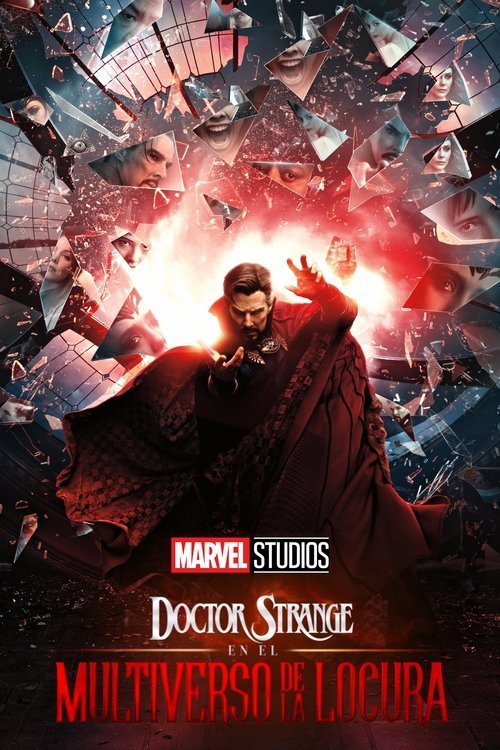

Doctor Strange en el multiverso de la locura (2022)
Sinopsis Rápida
El Doctor Strange se enfrenta a una amenaza multiversal que amenaza con destruir la realidad misma, forzándolo a recurrir a aliados inesperados y a confrontar versiones terribles de sí mismo.
Sinopsis Detallada
Tras abrir un portal al multiverso, el Doctor Strange se ve obligado a luchar contra una poderosa hechicera que busca manipular la realidad. La película explora los horrores del multiverso, presentando variantes de personajes conocidos y nuevas amenazas. La trama entrelaza la magia con el terror, ofreciendo una experiencia visualmente impresionante y emocionalmente compleja. La lucha de Strange por proteger la realidad es a la vez personal y cósmica, con consecuencias devastadoras.
¿Por qué tenés que verla?
- Experiencia visualmente deslumbrante y llena de acción.
- La dirección de Sam Raimi aporta un estilo único y terrorífico al universo Marvel.
- Amplía el concepto del multiverso en el MCU, abriendo posibilidades narrativas infinitas.
- Exploración de la fragilidad de la realidad y el peso de las decisiones.
Idea Extra
Análisis comparativo de las diferentes variantes de Doctor Strange en el Multiverso de la Locura.
{{CONTENIDO_RELACIONADO}}